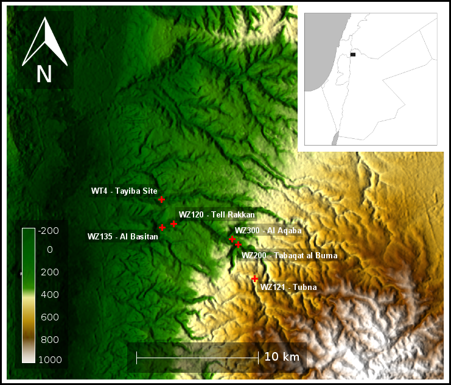
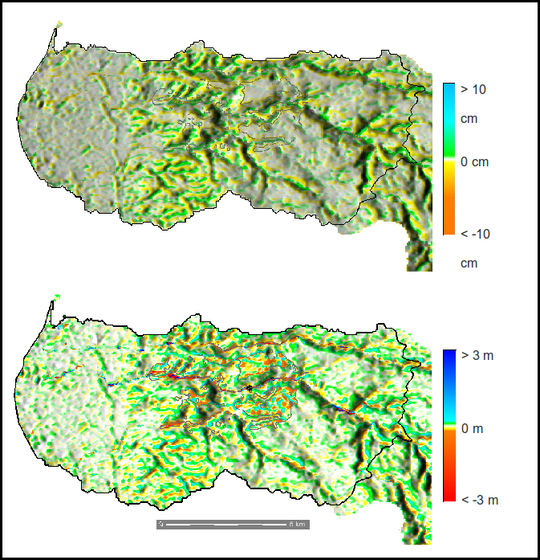
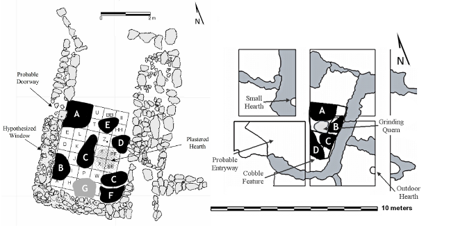

This page provides details on my PhD research in Wadi Ziqlab. Please e-mail me if you have any questions!
1 Introduction and Project Description
Download a PDF copy of this research proposal.
In my dissertation I investigate the long-term consequences of human interaction with the landscape during the Neolithic period (c. 10,000-7000 B.P.) in Southwest Asia. Some of the world’s earliest sedentary farming societies are found in this region, making it an excellent location to study the advent of human-caused environmental degradation. Studying this phenomenon in the Neolithic period provides the time-depth necessary for a more complete understanding of the deleterious consequences of subsistence decisions, because we can examine their effect at several different temporal scales. Many people in the developing world continue to live a lifestyle of subsistence farming and herding, and so face similar dilemmas as their Neolithic ancestors. A better understanding of the consequences of the cumulative actions of ancient farmers and herders will help us to better predict the future effects of agropastoralism in developing countries today.
My dissertation research focuses on the environmental consequences of a social and economic transition that occurred in the middle of the Neolithic period approximately 8250 years ago. Specifically, I am studying a shift in the pattern of settlements, where people who had previously lived in a small number of large villages dispersed into many small hamlets (Kuijt, 2000a; Banning, 2001). Despite this significant settlement change, archaeological evidence suggests that the basic Neolithic economy (cereal farming and goat/sheep herding) did not change at this time. It does appear, however, that the intensity of farming and herding landuse may have decreased.
It remains unclear why people left their large villages and dispersed across the landscape. The foremost hypotheses suggest that the impetus may have been increased erosion and decreased productivity in the arable land surrounding the early villages, but the fragmentary nature of the archaeological record from this period prohibits us from investigating them using traditional archaeological techniques. However, a new hybrid approach, which combines computer simulation modeling with the available archaeological proxy data, allows us to examine socio-natural processes that must have operated in the past, but for which we have little direct evidence. Thus, in my project I hope to employ this type of hybrid approach to the problem of understanding why such a drastic shift occurred in the settlement pattern of the Neolithic farmer-herders of Southwest Asia, and what it might teach us about the future consequences of the subsistence choices of modern agropastoralists.
2 Background
2.1 Project Area and Time Period
The proposed research will focus on the Wadi Ziqlâb drainage, an incised valley with a perennially flowing tributary stream located in northern Jordan. The geological, environmental, and archaeological history of Wadi Ziqlâb, as well as the ethnographic present of her peoples, is well documented (Banning, 1982; 1993; 1996; Banning and Siggers, 1997; Field and Banning, 1998; Banning, 1999; 2001; Maher and Banning, 2001a; Maher and Banning, 2001b; Gibbs et al., 2006).
I am investigating a not well-documented social transition that occurred around 8250 years ago. Before this time (i.e., during the Late Pre-Pottery Neolithic, hereafter referred to as “LPPN”, c. 9250 – 8250 B.P.), the area was characterized by high levels of settlement centralization, with dense habitation in a few large agglomerated towns, each containing several hundred households (3000 people or more) (Kuijt, 2000a). There was a highly standardized blade-based stone tool technology, advanced knowledge of plaster-making, multistory dwellings with many rooms, large statuary, and spectacular art (Simmons, 2007). Most of these characteristics are not found in the subsequent Late Neolithic period (c. 8250 – 7000 B.P.), which was generally much less spectacular than the LPPN. People then lived widely dispersed in small hamlets of only 2-3 households each (about 20 people), and houses were usually of a simple one-room form. Stone tools were made from non-standardized flakes, and it seems that, although people began to make and use pottery for the first time, very little art was produced and most pots were undecorated coarse-wares (Simmons, 2007). In the project area there are two known LPPN sites, and four sites with known Late Neolithic components (Figure 1).
2.2 Existing Hypotheses
Rollefson and Köhler-Rollefson (1992) suggest that the abandonment of the Late LPPN towns was prompted by increasing environmental degradation due to a thousand years of overgrazing, continuous cropping cycles, wood-gathering, and other human impacts. Kuijt (2000a) argued that the necessary social fragmentation of life in large villages led to a disintegration of late LPPN social structures and ritual beliefs, and that the addition of these social pressures to the resource stress caused by mounting environmental degradation lead to the disintegration of the LPPN culture.
Although the abandonment of the large villages at the end of the LPPN period is commonly referred to as a “collapse” (Simmons, 2007), it is my contention that this event should be viewed as a conscious reorganization, where individuals in communities chose to make lifestyle changes in response to a suite of external motivations. The lack of sophisticated lithic technology, spectacular art, and complex architecture in the Late Neolithic does not mean that it should only be interpreted as a kind of post-collapse “Dark Age”. Instead, I contend that the specific motivations for these lifestyle changes can be deduced by examining the nature of the changes themselves. In other words, if people chose to leave the large LPPN towns and reorganize into small dispersed hamlets, there must have been a good reason to do so. Banning (2001) postulates that shifting to a dispersed settlement system gave the people of the Late Neolithic many social, ecological, and economic benefits, including less competition for, and easier access to, agricultural fields and pastures. This would have spread agricultural risk over many ecotones, and reduced conflict between agricultural and pastoral landuses —all without the need for fundamental change to social or ritual institutions.
2.3 New Hypotheses
In a recent paper, my coauthors and I used a simple computer model to stochastically simulate agricultural and pastoral landuse around both a LPPN village and a Late Neolithic hamlet (Figure 2)(Barton et al., 2010). For each village, we simulated four different types of subsistence landuse: intensive agriculture (non-fallow), extensive agriculture (five-year fallow system), intensive agriculture plus pastoralism, and extensive agriculture plus pastoralism. Unsurprisingly, the rates of erosion and deposition, and the reduction of vegetation profiles were generally much lower around the Late Neolithic hamlet than the LPPN village. Interestingly, however, erosion rates between the two sites were never proportional for the same types of landuse, and instead seemed to be exponentially related to population size. Although this paper did not compare a complete centralized LPPN settlement system to a complete dispersed Late Neolithic settlement system, the results of our simulation nevertheless suggest that there were two potential solutions available to the resident farmers of the agglomerated LPPN villages: 1) reorganize the landuse system to emphasize grazing over agriculture (i.e., to become specialized pastoralists), or 2) to disaggregate into smaller hamlets and continue to practice mixed agropastoralism on a smaller and more dispersed scale.
In another recent paper, my coauthor and I used a more complex model (see Sections 3.1 and 4.1, below) to understand how the location of a village within a landscape affects population, economy, vegetation cover, and erosion/deposition rates over time (Ullah and Bergin, n.d). We simulated 100 years of subsistence agropastoralism for four different village locations. The first village was located in the center of a broad, flat alluvial plain for ease of access to farming and grazing land. The second village was located at the bottom of a canyon for seclusion. The third was placed up against a steep cliff for defensibility, and the fourth was located on a peak for maximum visibility. Even though the first village was the most successful in terms of population growth and economic stability, it also experienced the highest rates of erosion and landcover change. It seems that even though the other three villages were located on or near areas seemingly more susceptible to erosion (i.e., areas of high slope), the agents in the simulation avoided utilizing these areas due to the increased effort of reaching them. Pressured for space, these other villages experience initially low farming and herding returns, which then fluctuated over time. The initial and rapid success of the first village, however, induced agents to acquire more and more territory, which they exploited more and more intensively in order to support an ever-growing population, leading to drastically increased rates of environmental degradation. Thus, our study indicates that – under Neolithic socioeconomic conditions – situating a village in an agriculturally attractive location may actually reduce the sustainable lifespan of that village. If LPPN sites were located in prime agricultural areas, this phenomenon might explain their rapid growth and eventual abandonment. Also, if Late Neolithic sites were placed in inferior locations, this phenomenon would explains their small size and suggests that they would have experienced fewer environmental problems over time.
A final new hypothesis derives from a pilot study I completed comparing the architecture and use of internal domestic space of two successive phases of the Late Neolithic site of Tabaqat al Bûma in Wadi Ziqlâb (Ullah, n.d; 2009). Tabaqat al Bûma was occupied in five phases during the Late Neolithic, and I examined houses from the third and fourth occupation phases (7625 – 7360 B.P., and 7360 – 7200 B.P., respectively). It seems that the location of domestic cooking at Tabaqat al Bûma moved from interior to exterior space over time. These changes are likely related to shifts in subsistence economy, and thus may also be responses to environmental challenges. Outdoor hearths are commonly associated with the informal sharing of cooked foods, and this less-conscripted form of sharing may be an important source of flexibility in food sharing networks (Kent, 1993; Gurven et al., 2002; Enloe, 2003). Thus, the shift to outdoor cooking hearths may indicate the emergence of an informal food-sharing network towards the end of the Late Neolithic. Such networks evolve as a form of “social insurance” to spread the risk of individual resource failure in small-scale agricultural communities when faced with resource shortages or variability (Hegmon, 1991). This change does not occur at Tabaqat al Bûma until nearly 900 years after the LPPN ”collapse”, and if similar changes occurred at the same time at the other Late Neolithic sites in the Wadi, this would indicate that the dispersed Late Neolithic settlement system was indeed stable over a relatively long time-span. However, even if the Late Neolithic dispersal was indeed a mitigating response to LPPN environmental degradation, this evidence also suggests that it was not indefinitely sustainable.
3 Research Design and Objectives
My dissertation will explore the hypotheses summarized in Sections 2.2 and 2.3 to see if they provide the reasons for why people chose to change the way they lived. The research will be framed in two phases to expedite the hybrid approach.
3.1 Computer Simulation
During the first phase, I will use the custom computer-based modeling platform developed by the Mediterranean Landscape Dynamics (MedLanD) project (Barton et al., 2006; Barton et al., 2010 ; NSF Grant BCS-0410269), known as AP-SiM (AgroPastoral Siulation Model)(Ullah and Bergin, n.d; Barton, Ullah, and Bergin, 2010) to simulate the social and environmental consequences of agropastoral subsistence in the actual LPPN and Late Neolithic settlement system of Wadi Ziqlâb (see Figure 1 for site distributions and Table 1 for timeline). AP-SiM was created based on the principles of human behavioral ecology, and parameterized with real ethnoarchaeological data on subsistence agropastoralism. Manipulating the model parameters provides an array of different agropastoral subsistence behaviors. Comparison of many iterations of slightly different simulations will generate testable hypotheses about how the accumulation of multiple individual subsistence decisions could lead to different outcomes, alter the environment in different ways, and produce different kinds of archaeological records.
The purpose of this phase is to derive a series of final hypotheses with accompanying sets of archaeological and geoarchaeological test implications, within the domain of APSiM. The major research objectives of this phase are: 1) to parameterize the subsistence decisions of Neolithic farmers and herders, and to characterize their long-term consequences, 2) to determine the social and economic conditions that lead to environmental degradation in both the LPPN and Late Neolithic settlement systems of Wadi Ziqlâb, and 3) to determine the conditions under which the Late Neolithic system would be a successful mitigating response to LPPN degradation.
3.2 Archaeological and Geoarchaeological Testing
Once I have generated plausible test implications, I will compare them to the actual archaeological and geoarchaeological data that I have collected from Wadi Ziqlâb. For this second phase, I have already completed archaeological and geoarcheologcial fieldwork in the project area, so only laboratory analysis remains (see Table 1 for research timeline). This work builds upon previous geoarchaeological and archaeological work in the region (e.g., Field and Banning, 1998; Maher and Banning, 2001b; Gibbs et al., 2006; Kadowaki, 2007). This phase has three major research objectives: 1) to assess the degree of post-Neolithic landscape change in the Ziqlâb drainage, 2) to examine social change across the transition, and 3) to test the hypotheses generated in Phase I.
To accomplish the first objective, I will combine stratigraphic analysis of sedimentary deposits I studied in the field with OSL and 14C dating and analysis of remotely sensed imagery to build a chronology of landforms in the project area. This will be used to generate a series of GIS-based reconstructions of early Holocene landscapes in the drainage, which can then be compared to the landscapes produced by AP-SiM experiments. Accomplishing the second research object will require the synthesis of published archaeological data from nearby sites with data recovered from excavations in the Wadi itself. Quite a lot is known about the social changes that occurred during the LPPN (e.g., Kuijt, 2000b), but relatively little is known about similar changes in the Late Neolithic. For this reason, field work for this project has focused on the Late Neolithic sites in Wadi Ziqlâb. One of the major indications of social change is reorganization of domestic space, and I will seek evidence of such reorganization using both standard archaeological analyses (such as architectural analyses), as well as a relatively uncommon technique known as “microrefuse analysis” (see section 4.2 below).
4 Methods
In addition to standard archaeological and geoarchaeological methods, my dissertation research relies on Agent-Based Modeling and Microrefuse Analysis, which are relatively new and uncommon techniques:
4.1 Agent-Based Modeling
Agent-Based Modeling (ABM) provides an effective methodology of simulating simple agrarian households, who make decisions with rule-based (e.g., including norms and risk) assessments of internal and external conditions (Bankes, 2002; Kohler et al., 2005; Kohler, 2007). In ABM, multiple autonomous, but interacting, software agents are created with rules for formulating decisions and means for sensing their environment. They are emplaced on virtual landscapes and allowed to act and interact over time without intervention by the researcher. The AP-SiM model is an ABM of subsistence agropastoralism that is dynamically and recursively linked to a GIS-based model of landscape processes (climate, vegetation succession, and erosion/deposition). I have helped to develop the AP-SiM model over the past 5 years as a member of the MedLanD project, whose goals are to better understand the consequences of human land-use decisions in small-scale societies. In brief, AP-SiM simulates the socioeconomic activities of people in small scale societies like those of the LPPN and Late Neolithic, and records the cumulative effects of these activities on the landscape. Change to the landscape affects economic returns, which in turn affects the social life of the villagers (birth/death rates, resource competition, etc.). AP-SiM can be thought of as a computer-based “laboratory” for conducting simulated “ethnoarchaeological” experiments that would be impossible to do in the real world. This modeling framework allows experiments to be conducted over the types of time spans, climatic regimes, and geographic ranges that real coupled human-natural systems operate over, and thus provide a means to better understand the nature of long-term socio-natural processes such as the LPPN/Late Neolithic transition. It is important to note that AP-SiM is not an attempt at the “recreation of reality”, but rather is a modeling framework for producing test implications for a series of plausible hypotheses (Ullah and Bergin, n.d).
4.2 Microrefuse Analysis
Microrefuse analysis examines the spatial patterning of microartifacts (artifacts smaller than 10mm) on ancient living surfaces (Ullah, n.d; 2009). Microartifacts are recovered from the heavy fraction of flotation samples taken at regular intervals from these ancient surfaces. The patterning of microartifacts better reflects habitual patterns, and provides a unique opportunity to quantitatively compare changes in the use of internal space (Hodder and Cessford, 2004). In my dissertation research I employ a new procedure for processing and analyzing microrefuse, which optimizes data quality while minimizing labor requirements (Ullah, 2009). This procedure requires multiple analysts to sort through multiple subsamples to compensate for variances in: personal sensory experience, amount of practice individuals have had, and biases in artifact identification. Analysts are trained beforehand, and have access to an analysis manual and comparative type collection. Findings are recorded on forms that allow the identification and removal of counts from outlier analysts, while mitigating biases from pressure, competition, or conservatism. Once sorted and counted, the spatial patterning of the different types of microrefuse (e.g., lithics, bone, pottery, etc.) are mapped with GIS software. These maps are then used as input for a classification routine that defines areas of similar microartifact compositions and concentration. The types of activities performed in each defined area can then be deduced from the types and amounts of microartifacts that characterize them (Figure 3)(Ullah, 2009).
5 Broader Impacts
My research will add an important long-term perspective on the cumulative effects of small-scale human agropastoral landuse practices. By applying new computer modeling techniques in combination with traditional archaeological techniques, the research will provide more detailed insight into highly debated/contentious issues, such as the way in which individual agency translates into visible archaeological material. My research will contribute to the expansion of this new style of archaeological research by providing a new suite of well-documented computational tools that can be applied to many other archaeological problems. My research will explore the recursive nature of how everyday choices impact the environment, and affect the range and character of future economic activities. Small-scale agropastoralism is widely believed to be generally “sustainable”, but this concept is often under-defined. My research will help to define the time spans over which these activities can be considered truly stable. The modeling tools developed in this research also could be used to more precisely predict the long-term effects of current agropastoral landuse practices, especially in the developing world. The same techniques that I use to evaluate the environmental impacts of the Neolithic agropastoralists (i.e., simulation modeling) could also be applied to evaluate the least destructive combinations of modern-day subsistence agropastoralism in different climates and environments. This dissertation takes an interdisciplinary approach toward the study the long-term sustainability of human landuse practices, and could act as a template for policy makers, aid organizations, and other researchers interested in predictive modeling of human landuse strategies.
6 References
- Bankes, S.C., 2002. Agent-based modeling: A revolution? Proceedings of the National Academy of Sciences 99, 7199-71200.
- Banning, E.B., 1982. The research design of the Wadi Ziqlab Survey, 1981. American Schools of Oriental Research Newsletter 8, 4-8.
- Banning, E.B., 1993. Where the Wild Stones Have Been Gathered Aside: Pastoralist Campsites in Wadi Ziqlab, Jordan. Biblical Archaeologist 56, 212-221.
- Banning, E.B., 1996. Flinty Furlongs: The Settlement History of Wadi Ziqlab, Jordan. Ms. on file in the Department of Anthropology, University of Toronto, Canada., Toronto.
- Banning, E.B., 1999. Neolithic and Chalcolithic Archaeology in Wadi Ziqlab, Northern Jordan. Occident & Orient 4, 46-48.
- Banning, E.B., 2001. Settlement and Economy in Wadi Ziqlab During the Late Neolithic, in: Amr, K. (Ed.), Studies in the History and Archaeology of Jordan VII: Jordan by the Millennia, 7. Department of Antiquities, Amman, pp. 149-156.
- Banning, E.B., Siggers, J., 1997. Technological Strategies at a Late Neolithic Farmstead in Wadi Ziqlab, Jordan, in: Gebel, H.G., Kafafi, Z., Rollefson, G.O. (Eds.), The Prehistory of Jordan II: Perspectives from 1997. Ex Oriente, Berlin.
- Barton, C.M., Ullah, I.I., Mitasova, H., 2010. Computational modeling and Neolithic socioecological dynamics: A case study from Southwest Asia. American Antiquity 75, 364-386.
- Barton, C.M., Sarjoughian, H., Falconer, S., Mitasova, H., Arrowsmith, R., Fall, P., 2006. Modeling Long-Term Landscape Dynamics and the Emergence of Intensification.
- Barton, C.M., Ullah, I.I., Bergin, S., 2010. Land use, water and Mediterranean landscapes: modelling long-term dynamics of complex socio-ecological systems. Philosophical Transactions of the Royal Society A: Mathematical, Physical and Engineering Sciences 368, 5275 -5297.
- Enloe, J.G., 2003. Food sharing past and present: archaeological evidence for economic and social interactions. Before Farming: the Archaeology and Anthropology of Hunter-Gatherers 1, 1–23.
- Field, J., Banning, E.B., 1998. Hillslope Processes and Archaeology in Wadi Ziqlab, Jordan. Geoarchaeology 13, 595-616.
- Gibbs, K., Kadowaki, S., Banning, E.B., 2006. The Late Neolithic at al-Basatîn in Wadi Ziqlab, northern Jordan. Antiquity 80, http://antiquity.ac.uk/projgall/gibbs/index.html.
- Gurven, M., Hill, K., Kaplan, H., 2002. From Forest to Reservation: Transitions in Food-Sharing Behavior among the Ache of Paraguay. Journal of Anthropological Research 58, 93-120.
- Hegmon, M., 1991. The Risks of Sharing and Sharing as Risk Reduction: Interhousehold Food Sharing in Egalitarian Societies, in: Gregg, S.A. (Ed.), Between Bands and States, Occasional Paper No. 9. Center for Archaeological Investigation, Southern Illinois University, Carbondale, pp. 309-332.
- Hodder, I., Cessford, C., 2004. Daily practice and social memory at Çatalhöyük. American antiquity 17-40.
- Kadowaki, S., 2007. Changing Community Life at a Late Neolithic Farmstead: Built environments and the use of Space at Tabaqat al-Bûma in Wadi Ziqlab, Northern Jordan (PhD Diss.).
- Kent, S., 1993. Sharing in an Egalitarian Kalahari Community. Man 28, 479-514.
- Kohler, T.A., Gumerman, G.J., Reynolds, R.G., 2005. Simulating ancient societies. Scientific American 293, 76-84.
- Kohler, T., van der Leeuw (Ed.), 2007. The Model-Based Archaeology of Socionatural Systems. School for Advanced Research Press., Santa Fe, NM.
- Kuijt, I., 2000a. People and Space in Early Agricultural Villages: Exploring Daily Lives, Community Size, and Architecture in the Late Pre-Pottery Neolithic. Journal of Anthropological Archaeology 19, 75-102.
- Kuijt, I. (Ed.), 2000b. Life in Neolithic Farming Communities: Social Organization, Identiy and Differentiation. Kluwer Acadamic/Plenum Publishers, New York.
- Maher, L.A., Banning, E.B., 2001a. Wadi Ziqlab Survey, Archaeology in Jordan. American Journal of Archaeology 105, 427-29.
- Maher, L., Banning, E.B., 2001b. Geoarchaeological Survey in Wadi Ziqlab, Jordan, in: Zayadine, F. (Ed.), Annual of the Department of Antiquities of Jordan. Department of Antiquities of Jordan, Amman, pp. 61-69.
- Rollefson, G.O., Kohler-Rollefson, I., 1992. Early neolithic exploitation patterns in the Levant: Cultural impact on the environment. Population & Environment 13, 243-254.
- Simmons, A.H., 2007. The Neolithic Revolution in the Near East: Transforming the Human Landscape. University of Arizona Press, Tucson.
- Ullah, I.I.T., n.d. Particles from the Past: A Diachronic Study of the Spatial Patterning of Microrefuse from Room Floors at Late Neolithic Tabaqat al-Bûma, Northern Jordan, in: Parker, B.J., Foster, C.P. (Eds.), Household Archaeology: New Perspectives from the Near East and Beyond. Manuscript submitted to Eisenbrauns, Winowna Lake, December 2010.
- Ullah, I.I.T., 2009. Within-room spatial analysis of activity areas at Late Neolithic Tabaqat Al-Buma, Wadi Ziqlab, Al Koura, Jordan, in: Studies in the History and Archaeology of Jordan, X. The Department of Antiquities of Jordan, Amman, pp. 87-95.
- Ullah, I.I.T., Bergin, S., n.d. Modeling the Consequences of Village Site Location:Least Cost Path Modeling in a Coupled GIS and Agent-Based Model of Village Agropastoralism in Eastern Spain, in: White, D., Surface-Evans, S. (Eds.), Least Cost Analysis of Social Landscapes: Archaeological Case Studies for Beginners and Experts Alike. Manuscript submitted to University of Utah Press, Salt Lake City, January 2011.
7 Figures

Figure 1: Map of the
Wadi Ziqlâb project area showing the location of all the known
Neolithic sites in the Wadi, as well as the location of the project
area in Northern Jordan (inset). Sites WT4 and WZ120 date to the
LPPN, and all others date to the Late Neolithic.

Figure 2. Map of
modeled cumulative hillslope erosion/deposition (HED) for the Wadi
Ziqlâb
watershed after 200 years. Upper map shows HED without human landuse
simulation; lower map shows HED with simulated cultivation and
grazing around the LPPN site of Tell Rakkan. Scale is in meters of
erosion or deposition of accumulated sediment. Solid lines indicate
the boundaries of agricultural (light lines) and pastoral activity
(heavy lines).

Figure 3: Location of activity areas and architectural features from Phase 3 (left) and Phase 4 (right) houses at Tabaqat al Bûma. Letters represent different types of domestic activities (defined by the suites of microartifact types found in these locations). Note the location of the hearths in each phase.
Publications and conference
papers related to the Wadi Ziqlab Ancient Landuse Project
Publications:
2013 Mitasova, H.; Harmon, R.S.; Barton, C.M.; and Ullah, I.I. Geospatial Information Science-based Erosion Modeling. Manuscript in review for: Treatise in Geomorphology: Vol. 3 Remote Sensing and GI Science. Elsevier, Amsterdam.
2012 Ullah, I.I.; Bergin, S. Modeling the Consequences of Village Site Location: Least Cost Path Modeling in a Coupled GIS and Agent-Based Model of Village Agropastoralism in Eastern Spain, In: White, D.; Surface-Evans, S. (Eds.), Least Cost Analysis of Social Landscapes: Archaeological Case Studies for Beginners and Experts Alike. Manuscript accepted by the University of Utah Press, Salt Lake City, January 2011.
2011 Ullah, I.I. A GIS method for assessing the zone of human-environmental impact around archaeological sites: a test case from the Late Neolithic of Wadi Ziqlâb, Jordan. Journal of Archaeological Science. 38(3):623-632.
2010 Barton, C.M.; Ullah, I.I.; and H. Mitasova. Computational modeling and Neolithic socioecological dynamics: A case study from Southwest Asia. American Antiquity. 75(2):364-386.
2010 Barton, C.M.; Ullah, I.I.; and S. Bergin. Land use, water and Mediterranean landscapes: modelling long-term dynamics of complex socio-ecological systems. Philosophical Transactions of the Royal Society A: Mathematical, Physical and Engineering Sciences. 368(1931):5275 -5297.
Conference Papers:
2010 Ullah, I.I. A GIS method for assessing the zone of human-environmental impact around archaeological sites: a test case from the Late Neolithic of Wadi Ziqlâb, Jordan. Paper presented at the 2010 Summer Assembly of the University Consortium for Geographic Information Science. Hilton Head Island, SC. 15-16 June, 2010
2010 Barton, C. M.; Ullah, I.I. ; Mayer, G.; Sarjoughian, H.; Bergin, S., Miller, A.; and H. Mitasova. Coupled Models for Coupled Systems: Land-Use and Landscape Dynamics in the Mediterranean. Paper presented at the Annual Meetings of the Association of American Geographers. Washington, D.C. 15-18 April, 2010
2010 Bergin, S.; Ullah, I.I.; Barton, C.M.; Mayer, G.; and H. Sarjoughian. Coupled ABM-GIS Modeling of Agro-Pastoral Systems in Eastern Spain. Poster presented at the 75th annual meeting of the Society of American Archaeology in St. Louis, MO. 15-18 April, 2010
2009 Bergin, S.; Ullah, I.I.; and G. Mayer. A Coupled ABM-GIS model of small-scale farming. Poster presented at the North American Association for Computational Social and Organizational Sciences Meeting in Tempe, AZ. 1 December, 2009
2009 Ullah I.I. Particles from the Past: A Diachronic Study of the Spatial Patterning of Microrefusefrom Room Floors at Late Neolithic Tabaqat al-Bûma, Northern Jordan. Paper for presentation at the Household Archaeology in the Middle East and Beyond: Theory, Method and Practice Conference. Feb 19-21, University of Utah, Salt Lake City, USA.
2008 Ullah, I.I., Mayer, G.R., Barton, C.M., Sarjougian, H.S. Ancient Mediterranean landscape dynamics: Hybrid agent and geospatial models as a new approach to socioecological simulation. Paper presented in the symposium “Parallel Worlds: Interdisciplinary Agent-Based Models of Socioecological Processes and Complexity” at the 73rd Annual Meeting of the Society for American Archaeology, Vancouver, Canada.
2007 Ullah I.I. and Barton, C.M. Alternative Futures of the Past: Modeling Neolithic Landuse and Its Consequences in the Ancient Mediterranean.Contributed paper presented at the 72nd Annual Meeting of the Society for American Archaeology, Austin, TX
2006 DiMaggio, E.N.; Arrowsmith, J.R.; Barton, C.M.; Sarjoughian, H.S.; Fall, P.; Falconer, S.E.; Ullah, I.I. Geomorphic Mapping and Paleoterrain Generation for use in Modeling Holocene (8,000 – 1,500 yr) Agropastoral Landuse and Landscape Interactions in Southeast Spain. Poster presented at the 2006 American Geophysical Union annual meeting, San Francisco, CA.
2006 Barton, C.M.
and Ullah,
I.I.
Modeling
Impacts
of
Landuse
Practices
on Mediterranean Landscapes.
Simulation presented at the 2006
Archaeological Sciences of the Americas Symposium.
University of Arizona, Tucson, AZ
Download Geospatial Datasets
Wadi Ziqlab GIS datasets are available here. (Note that these data are now outdated)
1:200,000 queriable Geology maps (GRASS format) are available here.
IMPORTANT: These datasets are a result of many long and arduous hours of work that I have done as a part of the on-going MEDLAND research project at ASU SHESC. We are happy to share data, but since the project is not yet complete, this data is not yet completely public domain. Therefore please ask me for permission before downloading or using these datasets for any reason